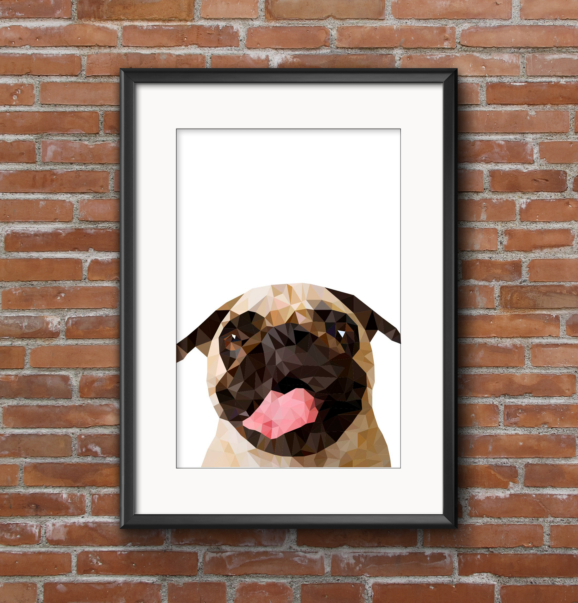

Læring på 1. semester

Hvad har jeg lært på 1. Semester?
Jeg har lært til helt vild meget om hvad det er som jeg gerne vil arbejde med i fremtiden.
Jeg har fået til helt nyt og bedre kendskab til Adobe pakken (Photoshop, Illustrator og Dreamweaver), der er stadig meget som jeg skal lærer, men kan kan efterhånden alle de basale funktioner, jeg kunne godt have ønsket der var flere del opgaver undervejs i undersivning.
Jeg har udviklet mig som koder, det har givet mig en lyst til at kode endnu mere, det har gjort mig nysgerrig på lære og kode endnu mere, jeg her blandet andet gået i gang med at lære kode SCSS, og jeg er også begyndt og snuse til noget PHP.
Jeg har fået en langt større forståelse for hvad design er, og hvordan man laver et godt design, at der mange ting som man skal forholde sig til når man udvikler et design. Jeg lært at der utrolig meget man skal forhold sig til når man udvikler et produkt, men jeg er synes det er enormt spændende og lære om den proces, der lægger bag det at lave at et design.
Det har været spændende og lære om mere end det jeg allerede vidste segmentering og målgrupper. Jeg er blevet en del klogere, planlægnings strategier, jeg synes det her været spændende at får et indblik. I faget virksomheden har virksomheden har vi fået styr på lovgivning omkring ophavsrettighed, noget jeg synes er meget interessant.
Læring - flow 1
I flow 1arbejde jeg første gang med Photoshop såden rigtig, jeg lærte meget af undervisning. Photoshop er et kæmpe program som jeg skal bruge mange flere timere sammen med Photoshop før jeg ikke novice i det, men jeg kender de basale funktioner. I dette flow blev vi introduceret til XD, som jeg synes er helt vildt fed program at arbejde med, man hurtigt få skabt noget funktionelt, uden brug af kode.
Se flow 1 projektet herLæring - flow 2
I flow 2 gik vi i gang med at kode noget som jeg glæde mig til, jeg havde nemlig kodet før og jeg synes at det er så fedt at kode, jeg lærte ikke så meget kodning som jeg ikke kunne forvejen, men jeg fik en fortrolighed med at det jeg kunne var rigtigt - selvom meget af det var selv lært. I dette flow begyndt jeg for alvor at have en følelse af jeg var havnet på den helt rigtig uddannelse, som jeg i det første flow var meget i tvivl om.
Se flow 2 projetktet herLæring - flow 3
Vi byggede vores engen vejr app, jeg var ikke blevet fortrolig med Illustrator overhovedet, jeg var overhovedet tilfreds med min aflevering, men den afspejlede det niveau jeg var på i illustrator. Men det gav mig lyst til at arbejde mere med programmet på egen hånd og det har jeg så gjort siden vi afleverede det projekt. Jeg synes det var spændende og arbejde med målgruppe, og segmentering.
Se flow 3 projektet herLæring - flow 4

Vores første gruppearbejde, vi havde i gruppen et godt sammenarbejde på trods af sygdom i gruppen som gjorde at vi ikke kunne mødes og arbejde sammen og meget måtte klare langt de fleste ting over Facebook og github. Vi misforstod dog hvad en e-commerce var, fordi vi søgte vores viden på google hvor vi fandt fem forskellige defineringer af hvad e-commmerce er.
Se flow 4 projektet herLæring - Flow 5 - Eksamen
Jeg var lidt presset følte overhovedet ikke jeg var klar til eksamen, vi var jo lige startet – sådan føles det i hvert fald. Jeg startede med at danne mig et overblik over alle kravene som der var til opgaven. Og startede jeg med at dele opgaven op i faser, jeg lavede en tidplan noget jeg havde en smule svært ved. Jeg fandt ud af hvor vigtig det var for mig at have et overblik, jeg brugt milepæle i mit gantt kort for ar vide jeg kan ikke start på en opgave før jeg har lavet det her.
Se flow 5 projektet herHvad forventede jeg at lære?
Jeg havde en ret høj forventning, måske også lidt for høje forventninger. Mange af dem er blevet ind firet men der også dem som ikke er, jeg havde en forventning til jeg et større kendskab til Adobe pakken, og at vi i hvert fald havde fået en introduktion InDesign. Jeg havde forventet vi havde fået mere undervisning i kode.
Jeg havde en forventning om at jeg var blevet en del dygtigere end jeg er blevet, men det handler også min egnen indsats, som kunne have været meget højre den har været, selvom den ar været ret høj. Jeg har lidt svært ved at finde balancen for hvor meget der skal læses til undervisning, mine forventning var også at vi havde haft nogle bøger hvor med dele af pensum, som vi skulle havde kendskab til inden gik i gang med undervisning.
Hvordan er jeg kunne mærke forbindelse mellem det forskellige flows? Hvordan er det gået med føre teorien til praksis?
Jeg synes forbindelsen mellem de forskellig har været god, man kunne brug den viden man har fået i de tidligere flows i det næsten flow, der er hele tiden blevet bygget mere viden på mellem hver flow projekt.
Jeg været enormt glad for den måde undervisning er opbygget på. At vi først har noget teori og derefter for lov til at bruge det i praksis. Jeg synes godt vi kunne have haft noget mere fokus på planlægning dele i alle flow opgaverne, af vi havde gennemgået det tidligere i forløbet.
Hvad vil jeg gerne blive bedre til? – Hvordan vil jeg blive bedre?
Jeg vil blive bedre til det hele, men jeg vil have særligt fokus på design og visualisering, og på kommunikation og formidling, det det fag jeg har sværeste ved at forholde mig til. Jeg vil gerne yder mere i forhold til min egen indsat på studiet, sætte mere tid af til at dygtige gøre mig, så jeg kan blive en bedre designer, en bedre koder, bedre formidler og analytiker. Jeg skal arbejde meget mere med Adobe pakke, jeg skal gennemarbejde mine opgaver endnu mere en jeg allerede har gjort. Jeg skal udforske Lyndas videoer endnu mere. Jeg skal blive bedre til arbejde med mine egne side projekter.
